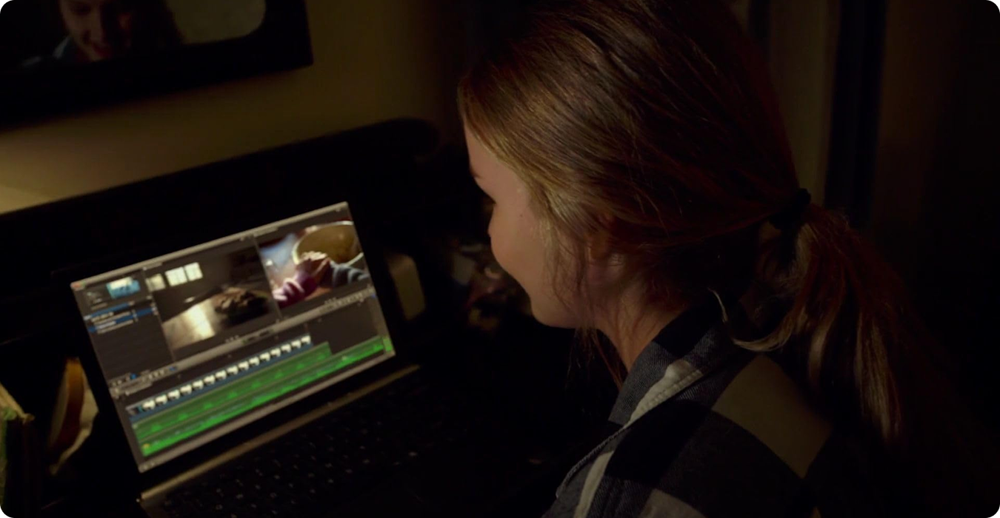
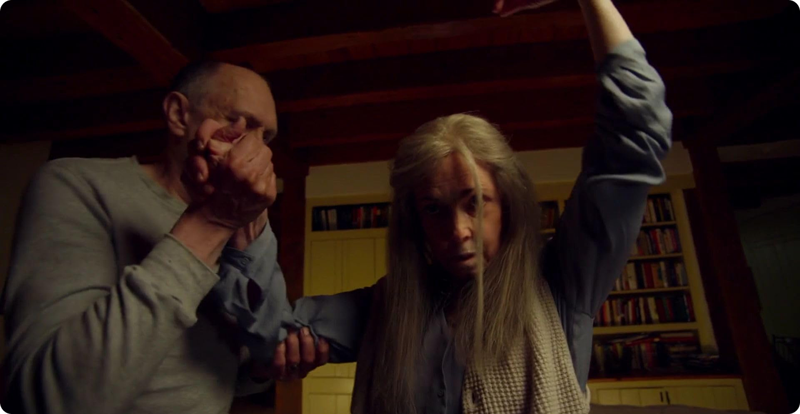
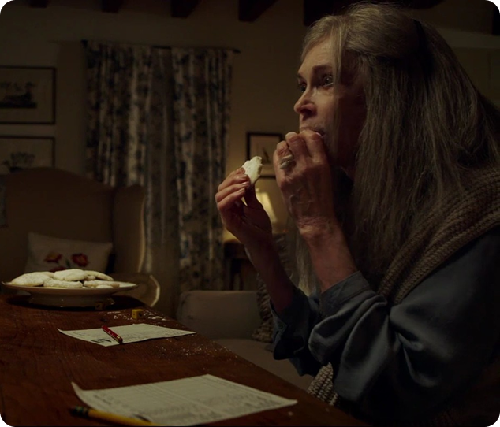
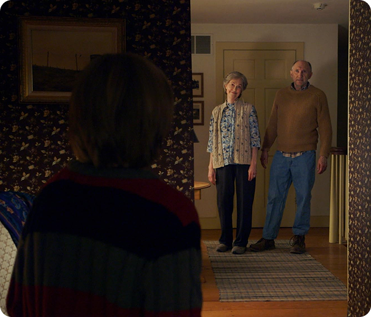
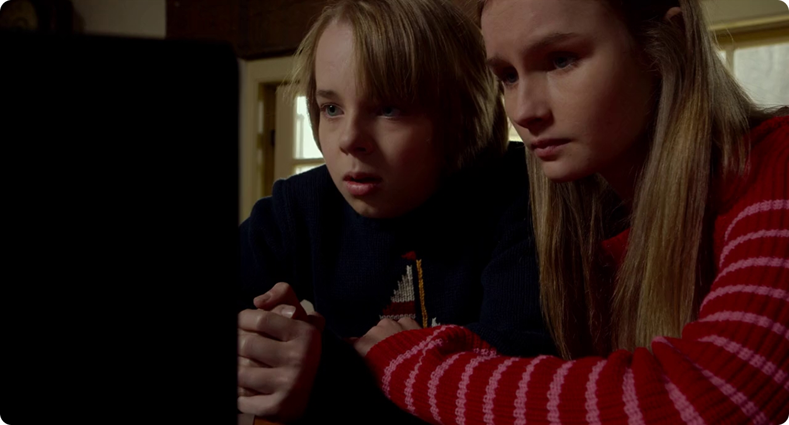
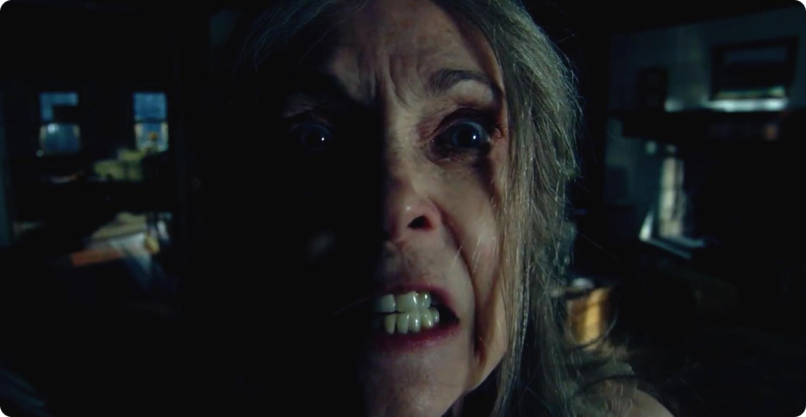

Камера как ограничение,
а не объективность

Формат «снято на камеру» даёт ощущение, будто события разворачиваются прямо перед зрителем, и он видит всё своими глазами. На самом деле камера в фильме — это взгляд детей: она ловит только то, что им бросается в глаза, всё проходит через их понимание, и при этом камера никак не ставит под сомнение происходящее. Вот в чём главный момент — зритель не имеет своей объективной точки зрения. Всё, что кажется «фактом», на самом деле уже отфильтровано фантазией и восприятием самих персонажей, что в литературе, например, называется «ненадёжный рассказчик».
Монтаж как инструмент манипуляции

Важно, что фильм не просто показывает записи — он смонтирован внутри самой истории. Главная героиня собирает материал в фильм, а значит:
- выбирает, какие сцены включить;
- решает, что важно, а что нет;
- выстраивает повествование.
Это означает, что зритель видит не «сырую реальность», а уже обработанную версию событий. Монтаж создаёт напряжение, но одновременно скрывает ключевые детали. Странности бабушки и дедушки сначала выглядят просто эксцентричностью — потому что так они поданы.
Нормализация странного


В фильме один из самых запоминающихся приёмов — это то, как постепенно нас втягивают в тревожную атмосферу. Сначала странное поведение пожилых персонажей кажется просто особенностью возраста. Монтаж и стиль подачи смягчают восприятие этих моментов, делают их почти привычными. Как и дети, зритель старается найти логичные объяснения тому, что видит. В итоге создаётся эффект обмана — опасность присутствует с самого начала, но мы просто не замечаем её как реальную угрозу.
Ограниченная информация
и эффект запаздывания
Фильм специально не выдаёт всю важную информацию сразу. Зритель получает лишь намёки, но собрать целостную картину не выходит, потому что нельзя проверить факты, а сами герои действуют, не зная всех деталей. Когда правда наконец открывается, появляется не просто шок, а чувство, что ты сам совершил ошибку. Вроде бы видел всё, но понял совсем иначе.

Вывод
Фильм «Визит» обманывает зрителя не резкими сюжетными кульбитами, а тем, как медленно, но верно искажает наше восприятие. И благодаря монтажу и тому, с чьей точки зрения происходит наблюдение за происходящим, зрителя словно делают соучастником этого заблуждения. Ведь мы привыкли верить картинке, которую нам показывают, соглашаться с тем, как герои всё объясняют, и поэтому совершенно не замечаем тревожных звоночков.

Вот почему этот фильм так цепляет. Он пугает не только событиями, что разворачиваются на экране, но и мыслью о том, как же на самом деле просто нами манипулировать, стоит лишь умело контролировать то, что мы видим.